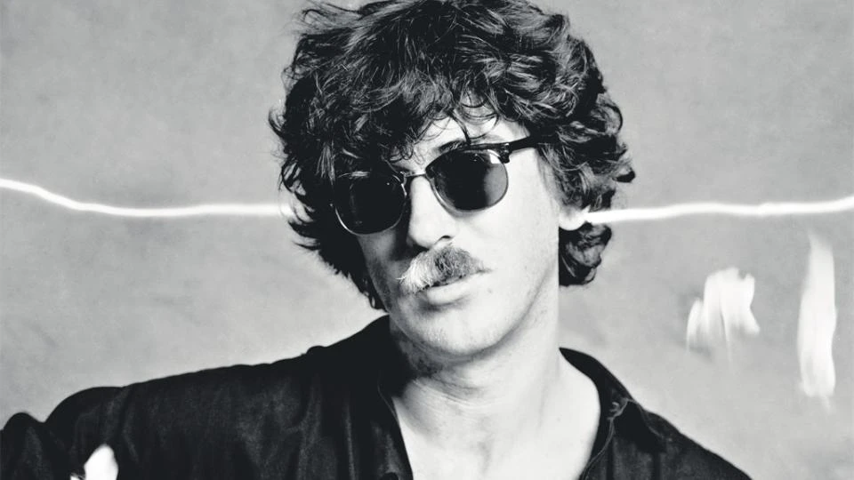

Charly Garcia

Información:
Nombre Verdadero: Carlos Alberto García Moreno
Donde Nació: Buenos Aires, Argentina
Fecha de Nacimiento: 23 de octubre de 1951
Ocupación: Músico, Cantante, Autor, Compositor
Instrumentos Voz, Piano, Sintetizadores, Teclados, Bajo, Batería
Generos Pop Rock, Post Punk, New Wave, Experimental, Jazz Rock
Biografia:
Carlos Alberto García Moreno, conocido artísticamente como Charly García, es un destacado músico, compositor y productor argentino nacido el 23 de octubre de 1951 en Buenos Aires.
Es una figura icónica del rock argentino y latinoamericano, reconocido por su vasta influencia en la música contemporánea.
García es famoso por su versatilidad musical, combinando elementos de rock, pop, jazz y música electrónica en su obra.
Su carrera comenzó en la década de 1970 como miembro de bandas como Sui Generis y Serú Girán, que marcaron época en la escena musical argentina.
Como solista, ha lanzado álbumes influyentes como "Yendo de la Cama al Living", "Clicks Modernos" y "Piano Bar", entre Otros.
Su estilo innovador y su capacidad para fusionar diferentes géneros musicales lo han convertido en una figura reverenciada tanto por críticos como por el público.
A lo largo de su carrera, Charly García, ha enfrentado desafíos personales y de salud, pero su talento y legado perduran como una fuente de inspiración para generaciones de músicos y amantes de la música en América Latina y más allá.